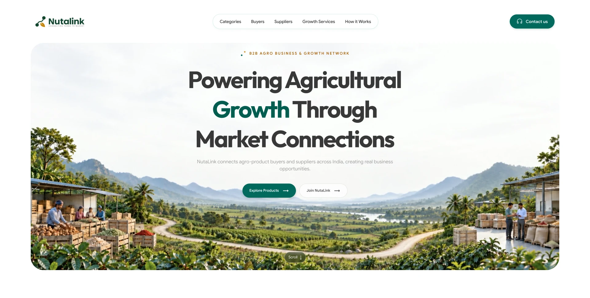

Show two immediate actions
The hero gives visitors a direct choice between exploring products and joining NutaLink, without forcing everyone through the same path.
A website design that introduces NutaLink’s agro business network through product discovery, business connections and clear next steps.

The full-page image shows the site design from the opening message to the final invitation. The notes describe the visible content, not results after launch.
Open full-resolution design ↗A market-connection message with Explore Products and Join NutaLink as the first choices.
Image-led agro product categories and distinct content for people exploring products or growing their business.
Growth services, reasons to choose the network and business previews add context beyond the category grid.
An enquiry form and a final invitation give interested visitors a way to continue.
NutaLink needs to explain both its agro product range and the wider business network. A visitor should be able to find a relevant route whether they want to explore products or connect their business.
I organised the site from a concise introduction into visual product categories, paths for product discovery and business participation, growth services, member previews and an enquiry route.
The hero gives visitors a direct choice between exploring products and joining NutaLink, without forcing everyone through the same path.
Photographic agro categories make the product range tangible before the site explains the broader network.
The page moves from categories and business paths through growth services and company examples to an enquiry form and closing invitation.
The design makes the range of the network easier to scan and gives visitors a clear path to explore, join or enquire. This describes the intended experience; no traffic or lead result is claimed.
The full-page visual shows the website structure and visual direction. My work here is the site design; it is not a claim that I designed the complete NutaLink product or measured its performance.